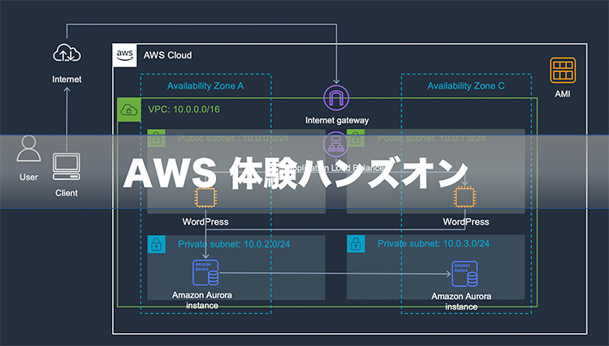
Amazon Web Services (AWS) を利用して、セキュアでスケーラブルなウェブサービスの構築手順を体験できるハンズオンを実施いたします。
AWS を使ってより安全にサービスを運用する方法、ウェブサービスの規模に合わせて、柔軟にシステムを拡張する方法を体験できる内容です。
本ハンズオンのドキュメントで掲載されているスクリーンキャプチャは 2022年04月時点のもので、現在の画面とは異なる場合がございます。予めご了承ください。
準備事項
インターネットに接続可能な PC

AWS を利用するにはインターネット接続が必要です。Windows、mac、Linux をご準備ください。本ハンズオン資料は mac にて作成しています。
AWS アカウント
 AWS アカウントを事前にご準備ください。
AWS アカウントを事前にご準備ください。
SSH クライアント
mac は純正のターミナルや、iTerm をご利用ください。Windows 環境では Teraterm を推奨します。
ブラウザ
 Firefox もしくは Google Chrome を推奨します。本ハンズオン資料は Google Chrome にて検証しています。
Firefox もしくは Google Chrome を推奨します。本ハンズオン資料は Google Chrome にて検証しています。
AWS のセキュリティやスケーラビリティを 高める機能・サービス 1/6 インターネットからのトラフィック (インバウンド) をブロックするだけでなく、EC2 からのトラフィック (アウトバウンド) も制限できるファイアウォール機能です。 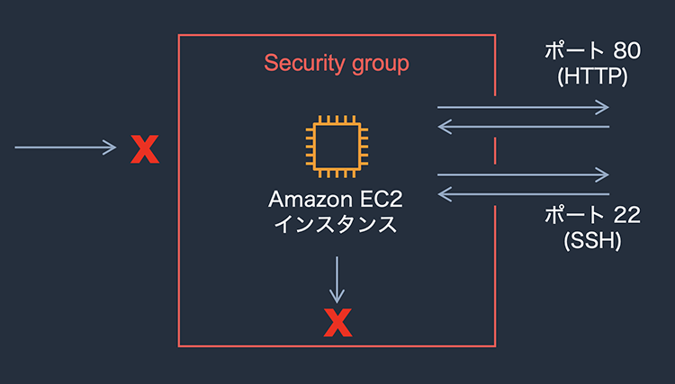 個々のインスタンスごとに、インバウンド、アウトバウンドに対して下記の許可ルールを定義できます。ルールはステートフルで扱われ、明示ルールが無い通信は拒否されます。
インターネットからのトラフィック (インバウンド) をブロックするだけでなく、EC2 からのトラフィック (アウトバウンド) も制限できるファイアウォール機能です。 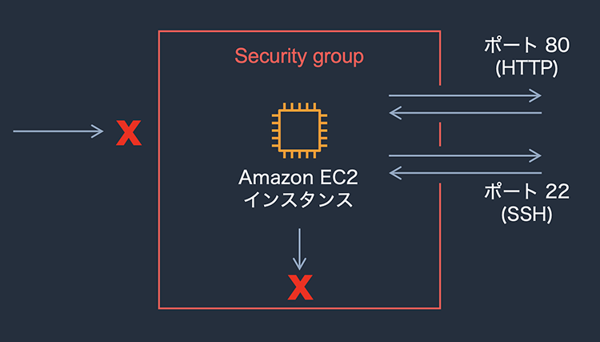 個々のインスタンスごとに、インバウンド、アウトバウンドに対して下記の許可ルールを定義できます。ルールはステートフルで扱われ、明示ルールが無い通信は拒否されます。
- インバウンド
- プロトコル (TCP/UDP/ICMP)
- ポート範囲 (ポート番号の範囲)
- 送信元 (アクセス元のIPアドレス)
- アウトバウンド
- プロトコル (TCP/UDP/ICMP)
- ポート範囲 (ポート番号の範囲)
- 送信先 (アクセス先のIPアドレス)
AWS のセキュリティやスケーラビリティを 高める機能・サービス 2/6 VPC はプライベートな仮想ネットワークサービスです。VPC を使うと AWS クラウド内にお客様専用のプライベートアドレスの空間を構築できます。
VPC はプライベートな仮想ネットワークサービスです。VPC を使うと AWS クラウド内にお客様専用のプライベートアドレスの空間を構築できます。
社内ネットワークとインターネット VPN やキャリアの閉域網で接続ができます。
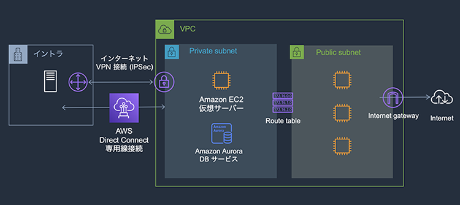
VPCとサブネットについて
- 1 つの VPC は、1 つのネットワークアドレス (CIDR) で定義します。
- 1 つの VPC 内には、複数のサブネットを作成することができます。
- サブネットは特定のアベイラビリティゾーン内に配置します。

CIDR | IP アドレス数 |
xxx.xxx.xxx.xxx/16 | 65,531 |
xxx.xxx.xxx.xxx/20 | 4,091 |
xxx.xxx.xxx.xxx/24 | 251 |
xxx.xxx.xxx.xxx/28 | 11 |
上記は払い出される IP アドレス数から、AWS の予約 IP 数を抜いた「ユーザーが利用できる IP 数」です。
各サブネットにおいて先頭の 4 IP アドレスと最後の 1 IP アドレスは AWS 側で確保されます
- AWS > ドキュメント > Amazon VPC > ユーザーガイド > VPC とサブネットの概要 - IPv4 用の VPC とサブネットのサイズ設定
AWS のセキュリティやスケーラビリティを 高める機能・サービス 3/6
各サブネットにはルートテーブルがアタッチされます。
ルートテーブルの設定を変更することでデータの流れを制御できます。
- パブリックサブネット
ルートテーブル: rtb-XXXXXXXX送信先
ターゲット
10.0.0.0/16
local
0.0.0.0/0
igw-XXXXXXXX
- プライベートサブネット
ルートテーブル: rtb-XXXXXXXX送信先
ターゲット
10.0.0.0/16
local
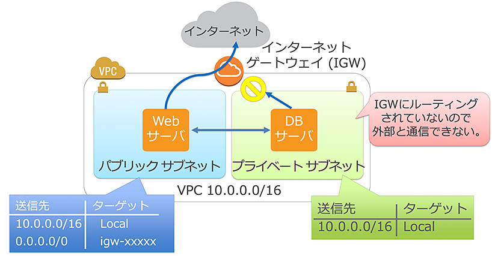
AWS のセキュリティやスケーラビリティを 高める機能・サービス 4/6
制御可能な項目はセキュリティーグループと同じで、ステートフル (SG) かステートレス (NACL) かの違いがあります。
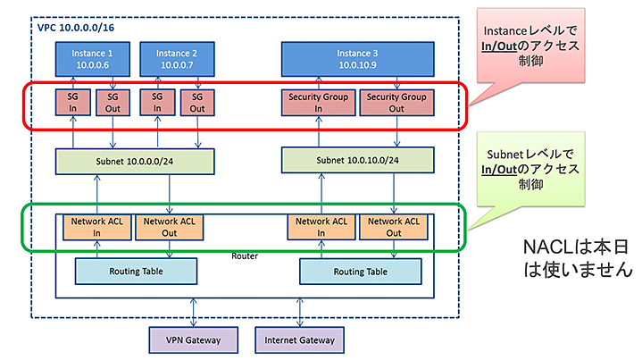
- 個々のサブネットごとにアクセス制御が可能
- インバウンド、アウトバウンドに対して下記の設定が可能
インバウンド
- Port range (ポート番号)
- Source (アクセス元 IP アドレス)
- Allow/Deny
アウトバウンド
- Port range (ポート番号)
- Destination (アクセス先 IP アドレス)
- Allow/Deny
AWS のセキュリティやスケーラビリティを 高める機能・サービス 5/6
AWS 自体のリソース操作をよりセキュアに行うための認証・認可の仕組みです。
AWS 利用者の認証とアクセスポリシーを「グループ」「ユーザー」「ロール」で管理します。
- 実行出来る操作を IAM ポリシーで設定
- ユーザーごとに認証情報の設定が可能
- マネージメントコンソールにはユーザ名とパスワードを使用 さらに、MFA (多要素認証) の利用が推奨
- API にはアクセスキーとシークレットキーを使用
IAM ポリシーで必要最小限のみ付与
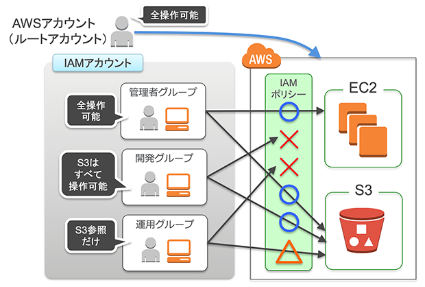
AWS のセキュリティやスケーラビリティを 高める機能・サービス 6/6
- AWS アカウント (ルートアカウント)
- ハードウェアトークンで保護
- トークンは金庫などで管理

- IAMアカウント
- 個人ごとのアカウント
- 仮想 MFA 対応のスマホアプリで保護
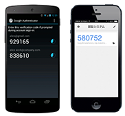
ハンズオンの流れ
フェーズ 1
WordPress サイトを最小構成でスタートする。
- サーバー 1 台構成
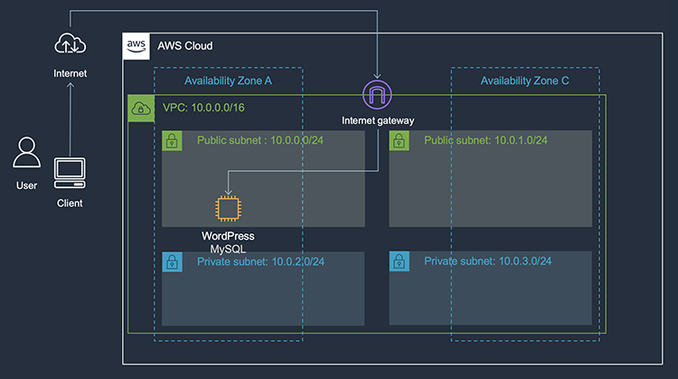
フェーズ 2
スケールできるアーキテクチャに移行する準備をする。
- Web + DB (サーバー 2 台構成)
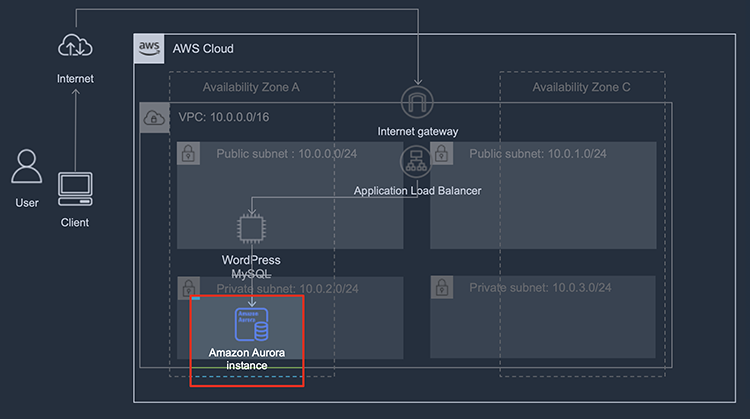
フェーズ 3
Web サーバーがスケールできる構成にする。
- LB + Web x 2 + DB (サーバー 3 台構成)
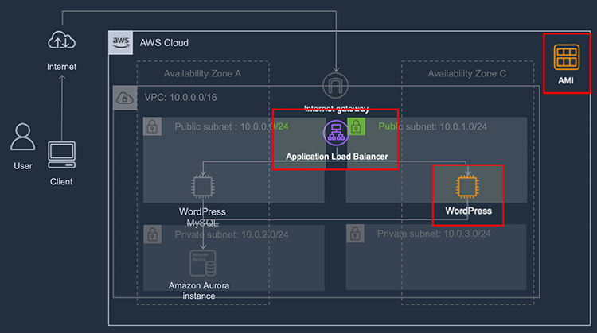
オプション
DB サーバーを冗長化された構成にする。
- LB + Web x 2 + DB x 2 (サーバー 4 台構成)
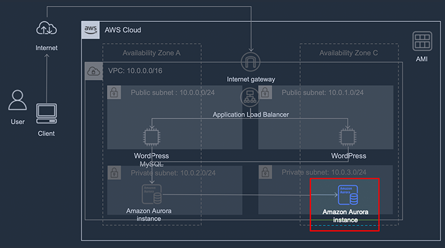
最終
DB サーバーを冗長化された構成にする。
- LB + Web x 2 + DB x 2 (サーバー 4 台構成)
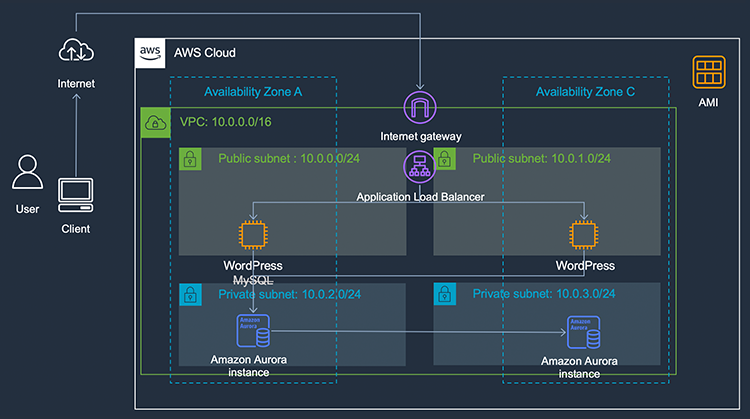
【補足】無料利用枠 (個人アカウントでご参加の方向け)
ハンズオンの一部は AWS 無料利用枠の範囲で進めることができます。また、ハンズオンが終了した後で、作成したリソースを全て削除すると課金はされません。
<1年間、以下範囲が毎月無料で利用できます>
- EC2: Windows/Linux/RedHat など の t2.micro インスタンスを合計約 1ヶ月分
- EBS: 合計 30GB の General Purpose (SSD) と 1GB のスナップショットを合計約 1ヶ月分
- RDS: MySQL/PostgreSQL など を 20GB まで db.t2.micro インスタンスを合計約 1ヶ月分 (シングルAZ構成限定)
- ELB: 合計約 1ヶ月分、15GB の処理 トラフィック:インターネットへのデータ送信 15GB
スクリーンキャプチャに表示されている情報について
リソースの各種 ID (vpc-XXXXXX、subnet-XXXXXX、i-XXXXXX など) は AWS 全体で ユニークとなっており、スクリーンキャプチャに記載の ID と実際に操作されて作成される ID は各自で異なります。
Elastic IP (固定IPアドレス) なども各自で異なります。
画面のデザイン等が変更されて実際とは異なっていることがあります。画面の項目名等から判断して操作下さい。
サーバー 1 台構成
最小構成で最も低コストですが、拡張性が低く、性能を一定以上上げることができません。
拡張性: 低
拡張するには 1 台のインスタンスタイプを大きくします。
冗長性: 低
インスタンスが稼働する物理サーバが壊れると一旦停止になりますが、同じアベイラビリティゾーン内の問題の無いサーバですぐ起動できます。
AWSマネジメントコンソールへのログイン
ログイン方法は利用するアカウント種類によって異なります。
IAM アカウントを御利用の場合
会社等で、IAM アカウントを本ハンズオン用に準備されているケース
事前にログイン情報が記載された csv ファイル (user1.csv 等) を確認してください。そのファイルに、ログイン用の URL、User Name、パスワードが記載されていますので、 それに従ってログインしてください。
AWS のルートアカウント(個人アカウント)を御利用の場合
https://console.aws.amazon.com にブラウザでアクセスして、アカウントの E メールアドレスとパスワードでログインしてください。
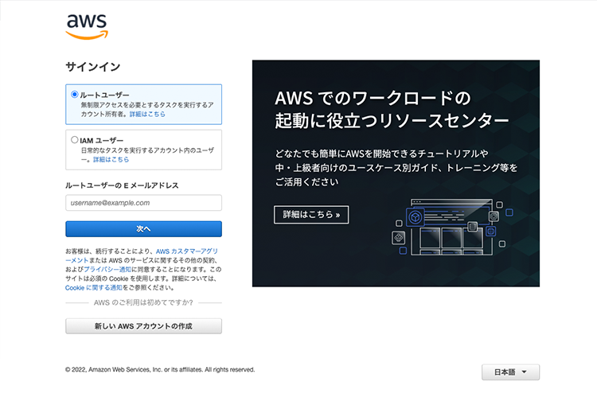
サインインするとホーム画面が表示されます。
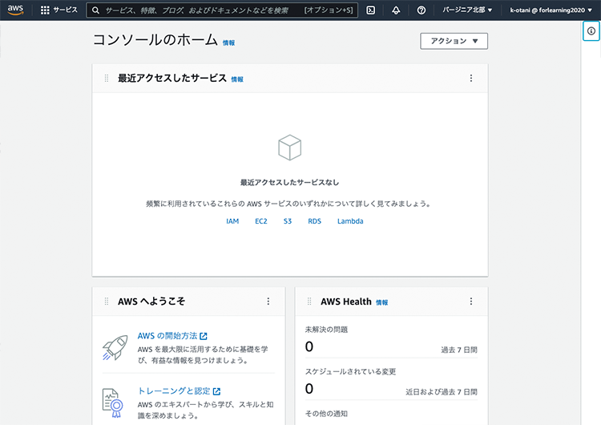
左上の AWS アイコンをクリックするとホームに戻ります。
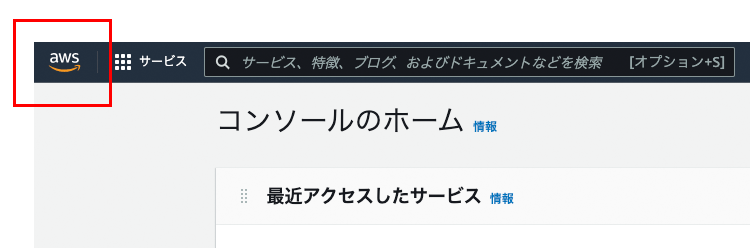
サービスをクリックすると、EC2 や RDS といった各種 AWS サービス名へのリンクにアクセスできます。
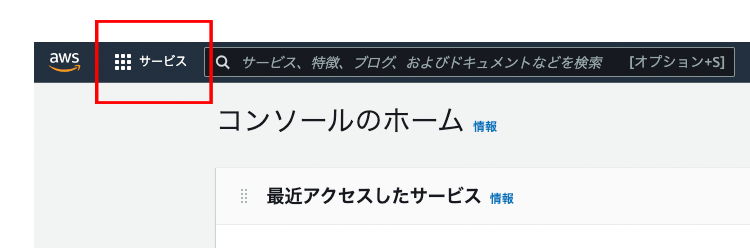
テキストボックスにサービス名を入力することで候補が表示されるので便利です。
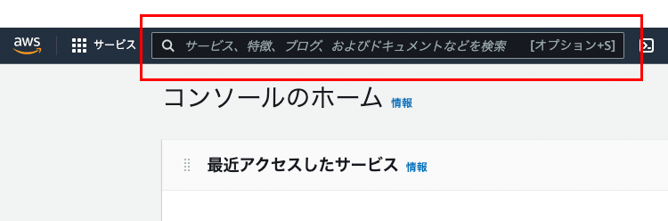
リージョンを変更する (シンガポール)
AWS マネジメントコンソールに初めてサインインすると、「バージニア北部」リージョンが表示されます。練習で、シンガポールリージョンに移動してみたいと思います。
このリージョン名をクリックして候補から、アジアパシフィック (シンガポール) ap-southeast-1 を選択してください。
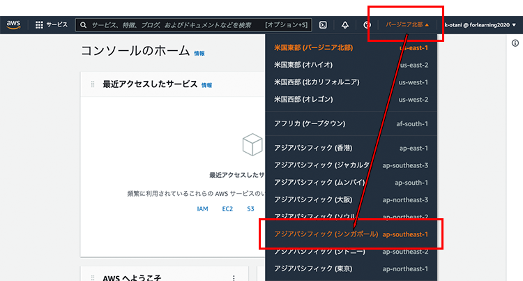
リージョンを変更する (シドニー)
画面遷移して「シンガポール」リージョンが表示されたら、次は「シドニー」リージョンに移動してみてください。「シンガポール」をクリックし、「アジアパシフィック (シドニー) ap-southeast-2」を選択してください。
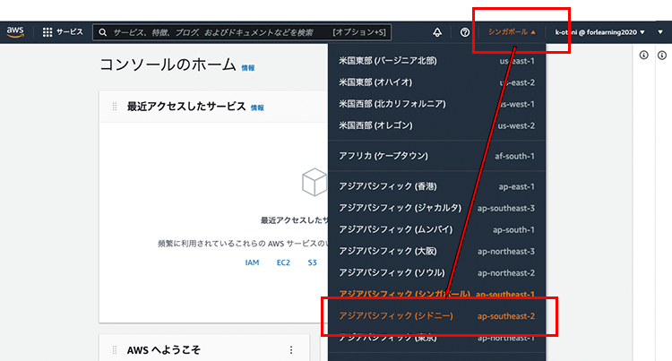
リージョンを変更する (東京)
リージョンの移動は完璧でしょうか。
それでは、本日構築する「東京」リージョンに移動してください。「シドニー」をクリックし、「アジアパシフィック (東京) ap-northeast-1」を選択してください。
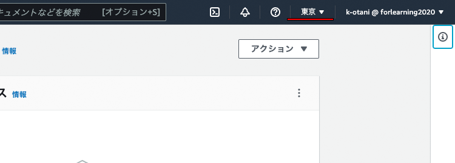
サービス をクリックして、表示されたメニューから ネットワーキングとコンテンツ配信 をクリック、表示された VPC を選択します。
VPC コンソールに画面遷移します。
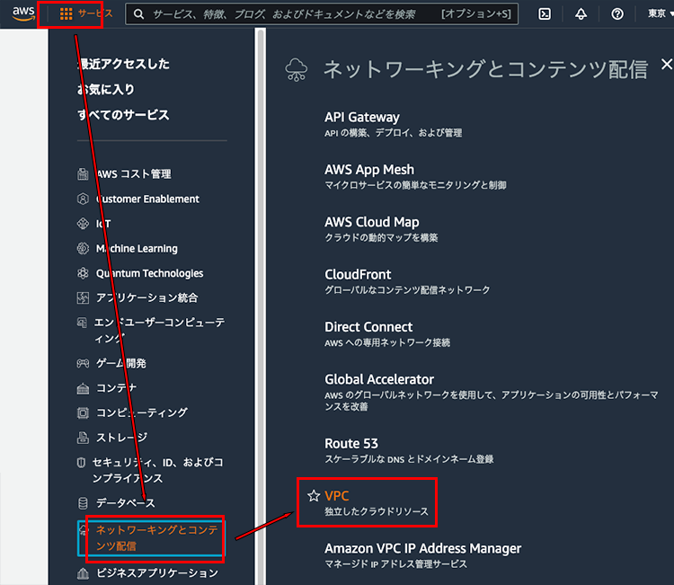
VPC コンソールが表示されたら、[VPC ウィザードを起動] ボタンをクリックしてください。
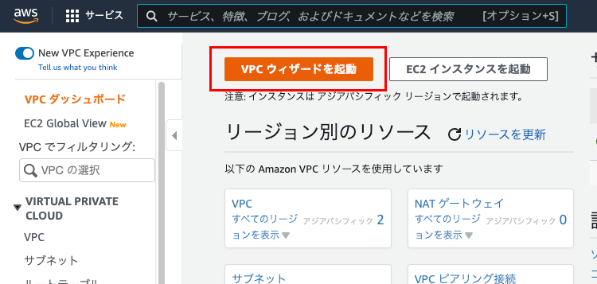
VPC ウィザード - Step1
VPC ウィザードは文字通り、画面の手順に沿ってクリックして進めていくと VPC が構築できる便利なウィザード機能です。
以前は画面が遷移していく形でしたが、2022年4月現在はリニューアルして 1 ページで収まらないほど大きな画面になりました。全貌は以下の画像の通りですが、順番に設定していきます。
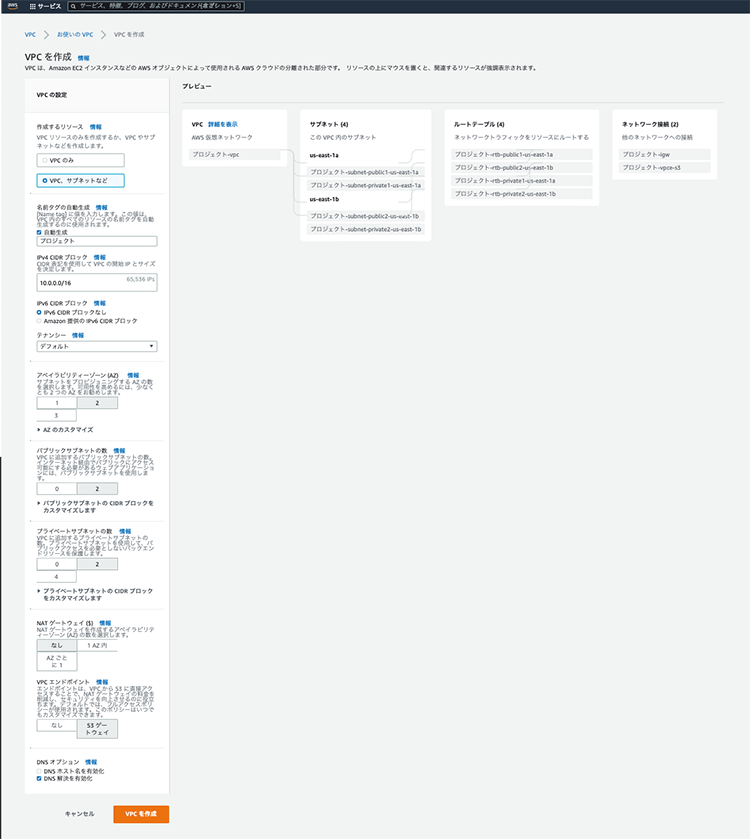
まず 作成するリソース は「VPC、サブネットなど」を選択します。
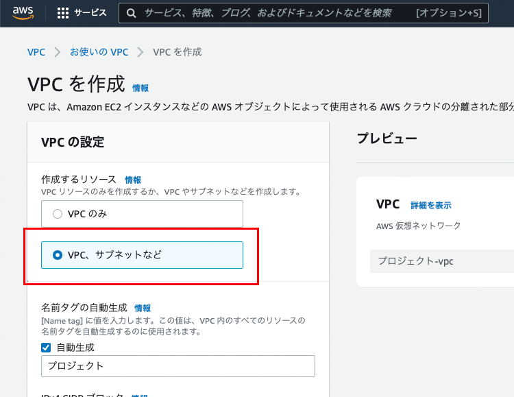
次に、名前タグを設定します。「handsonyyyymmdd(今日の日付)」などの名前を入力してみてください。
右側に表示された VPC やサブネット、ルートテーブル、インターネットゲートウェイ、エンドポイントなどの名前タグが動的に設定されます。
以前のウィザードでは手入力だったので便利になりました。
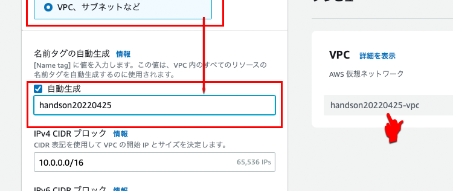
本ハンズオンで作成する VPC のレンジは 10.0.0.0/16 にしますので、
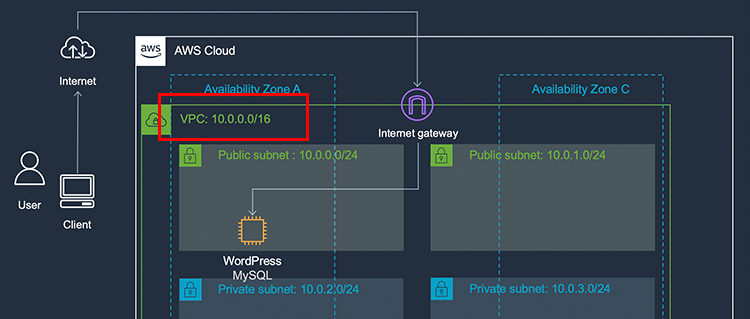
デフォルトで入力されている「10.0.0.0/16」のまま、次に進んでください。
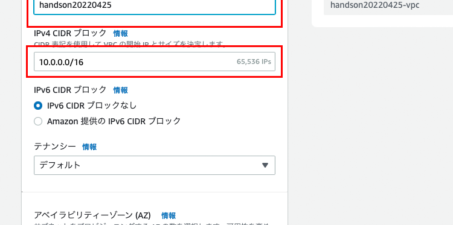
アベイラビリティゾーンは 2 のままで大丈夫です。AZ のカスタマイズから、どのアベイラビリティゾーンを利用するか決めることができます。本ハンズオンでは、AZ-a と AZ-c を利用します。
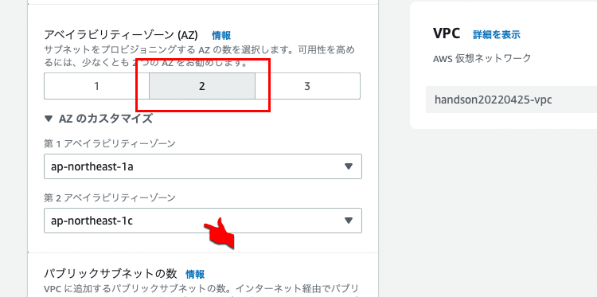
本ハンズオンでは、パブリックサブネットを二つ作ります。
それぞれ、10.0.0.0/24、10.0.1.0/24 のアドレス空間を利用しますので、
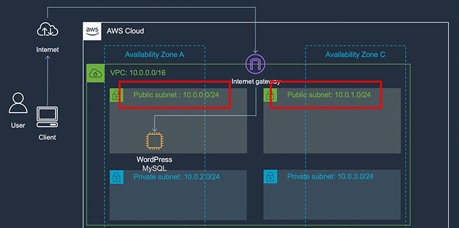
ap-northeast-1a の IP アドレスを「10.0.0.0/24」に、ap-northeast-1c の IP アドレスを「10.0.1.0/24」と入力してください。
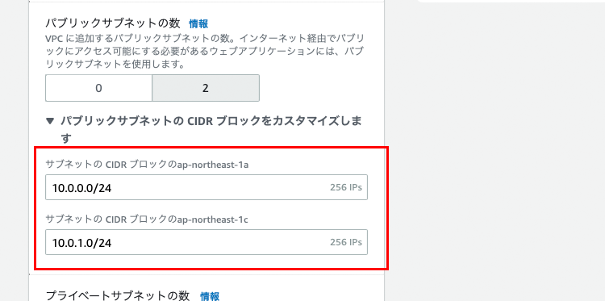
続いて、プライベートサブネットの IP アドレスも二つ作ります。
それぞれ、10.0.2.0/24、10.0.1.3/24 のアドレス空間を利用しますので、
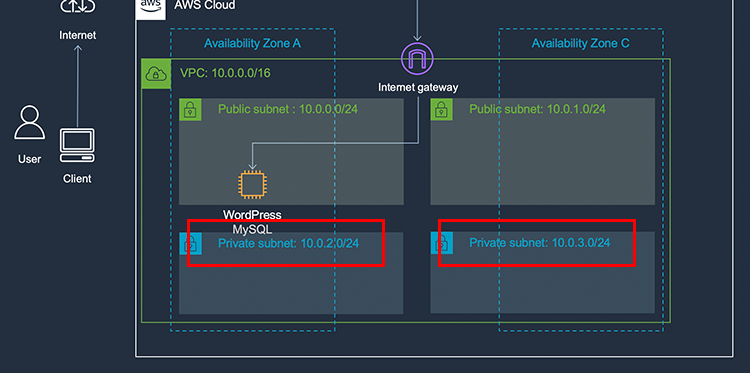
ap-northeast-1a の IP アドレスを「10.0.2.0/24」に、ap-northeast-1c の IP アドレスを「10.0.3.0/24」と入力してください。
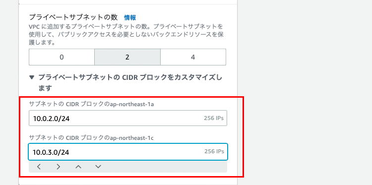
NAT ゲートウェイは利用しません。
VPC エンドポイントも今回は利用しないので なし にしてください。
DNS オプションはどちらもチェックを入れてください。
[VPC を作成] ボタンをクリックしてください。
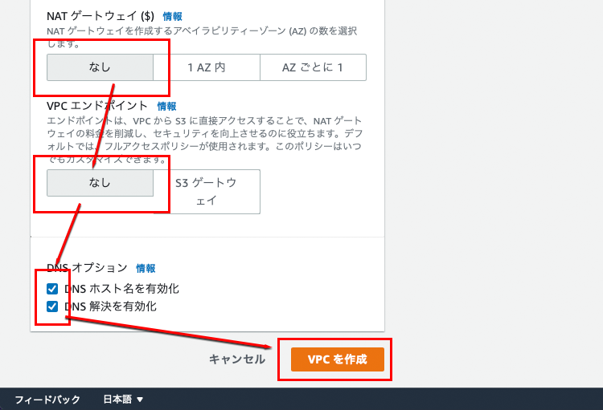
プレビューにも表示されている通り VPC、サブネット、ルートテーブル、インターネットゲートウェイが作成されます。
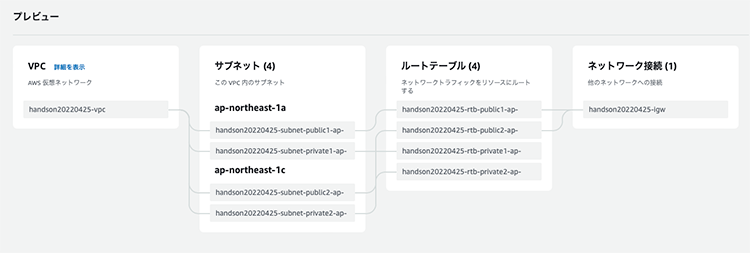
VPC が作成されたら [VPC を表示] ボタンをクリックしてください。
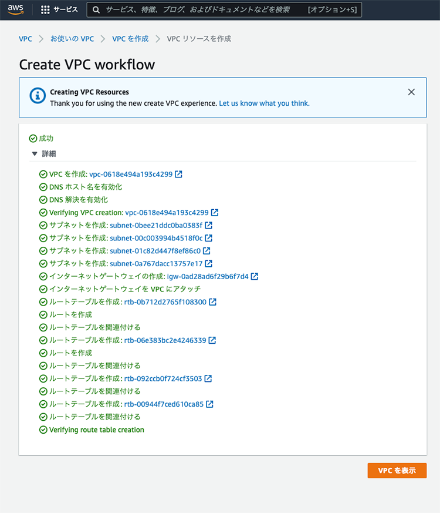
[VPC を表示] ボタンをクリックすると、作成された VPC の詳細画面に遷移するので、左のメニューペインににある VPC のリンクをクリックしてください。

左のメニューペインににある VPC でフィルタリング: のテキストボックスをクリックすると、候補が表示されますので、作成した VPC を選択してください。
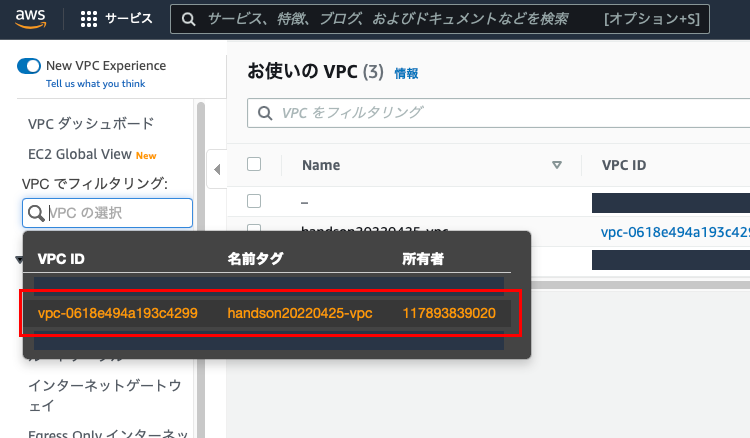
作成した VPC だけがフィルタリングされて表示されます。
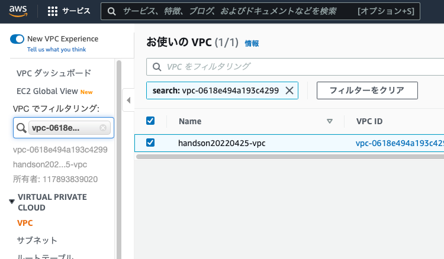